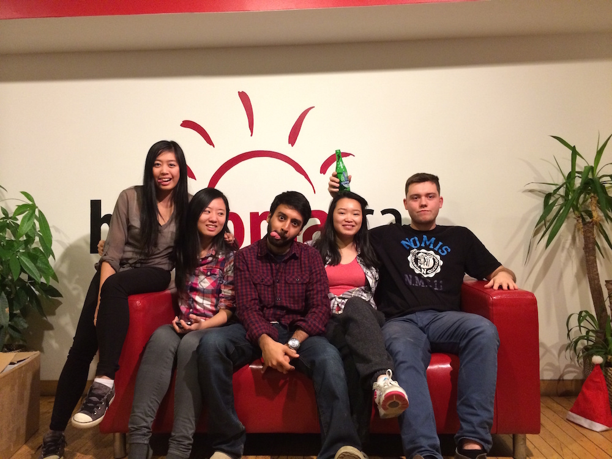
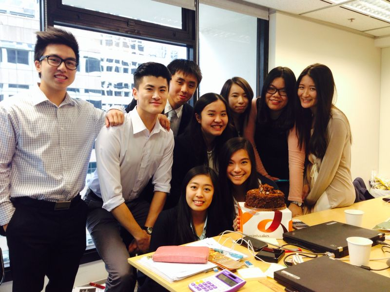
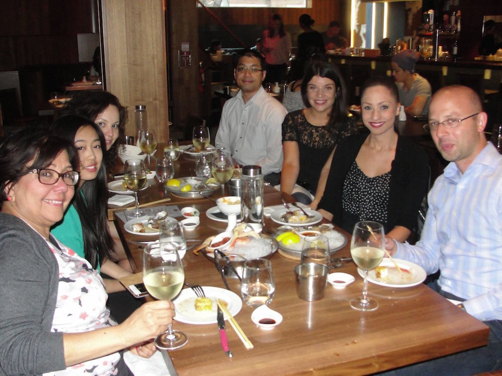

My main responsibility is interacting with and engaging customers. When customers have problems, they notify our team of their issue and we do our best to assist them in coming up with a solution. We communicate with customers of Buytopia through phone calls and via email messaging. Information is also communicated through an online discussion board so that people can openly and anonymously ask questions and obtain answers. For most of the day, I am answering customer service phone calls while replying to customer emails. The remaining portion of my day is used to assist with other departments. One responsibility that I had in the finances department is writing and mailing out cheques with the proper invoices and keeping the stubs organized. Another responsibility I had is in the logistics department, assisting with preparing shipments by sticking labels and stamps on envelopes and boxes.
During my co-op period, Buytopia had launched a new mobile application and I was required to act as a sales agent to promote the product to customers during my phone calls from customers or randomly select customers to call during the day. There was a minimum number of emails we had to answer daily as well as minimum number of people we must promote the new product to. In the Human Resources department, I assisted with the process of hiring new co-ops by looking at resumes and participating in the interview process. The HR manager and I discussed each applicant and I learned about what to look for in an ideal candidate for the position. I was able to experience and understand the hiring process a little bit more. I was also responsible for creating a new training manual for the next term of co-op students to use nearing the end of my co-op term.

[Above] University of Waterloo co-ops with our manager (middle).
From this position at Buytopia, I was hoping to gain work experience, teamwork skills, as well as communication skills. Since this is my first office job, I believe this experience helped me to understand how a company functions and how to interact in an office environment. The flexibility built into this position allowed me to experience many different responsibilities in different departments to develop my skills.
Our customer relations team was a group of 6 people, including my manager, and we worked together closely on a daily business to solve any reoccurring problems noted by our customers. In order to assist customers, we also had to communicate with many different departments for more information. For example, we must communicate with our tech department in order to solve any issues with our website. The customer relations team is responsible for getting all the details of an issue so that our tech team can easily pinpoint and fix it. Throughout this back-and-forth communication with other co-workers, I developed good teamwork skills.
From communication with people constantly on a daily basis, I have learned effective and ineffective ways of communicating. For example, on the first week of work, I did not know how to bring bad news to customers in a way where they can accept my apologies without being angry. By the end of the term (with experience), I was perfectly comfortable to do such a task. I had to choose my words very carefully and on the spot.
My work term experience with Buytopia has exceeded my expectations because I have learned more skills than what I had expected to learn. These particular skills are: multi-tasking and problem solving. During the workday, the phone lines are constantly busy because customers are calling in nonstop. This means that the customer relations team needs to respond to emails while speaking to customers on the phone. As the term progressed, my ability to solve more than one problem at the same time increased and I became increasingly faster at each task. A reason for this improvement may be because my problem solving skills improved along with my multi-tasking skills. As I became more familiar with the processes and common issues, my average time to resolve an issue went from 10-12 minutes to 2-3 minutes.
This experience helped to validate my career goal to be a human resources professional. I learned that my strengths were in organization, my weakness was in communicating, and that my interests are in working with people.
I knew that my weakness was in communicating when I felt anxiety because of having to speak with angry customers. As a result, some customers may end up confused or even more frustrated. To fix this, I used trial and error to find the correct and acceptable way of communicating. Eventually, I found myself increasingly enjoying speaking to customers and solving problems. I felt that every angry customer was a new challenge.
 As an intern, my responsibilities were not strictly set because I was everybody with anything they requested. On an average day, I would be facilitating office processes by photocopying, scanning, printing out information.
As an intern, my responsibilities were not strictly set because I was everybody with anything they requested. On an average day, I would be facilitating office processes by photocopying, scanning, printing out information.
I spend the majority of my time working on draft tax computations based on draft or audited financial statements provided by companies (our clients). Creating a draft tax computation requires reviewing the previous year(s) financial statements and tax computation for reference as well the as the most updated financial statements of the year of review. Interns are also required to edit the cover letters submitted to the revenue department and client by updating the date and changing any other figures (from the previous year’s letter) that has changed through the course of the year. If the company has no previous letter (if they are a new client), I would have to refer to similar companies’ letters and copy sections from their letter that apply. After the draft documents are prepared, I pass it onto a senior associate who checks it and passes it to a manager or senior manager for review. The partner for the job gives the drafts a final review and the documents get passed back to me for editing and final touches.
I was also involved in creating a report to a client about their investment portfolio on a monthly basis. I drafted the letters as well as the computation for my senior to view and edit. I was also involved in other assignments as needed, such as organizing groups of companies using Microsoft Excel or editing draft e-mails to be sent.

[Above] University of Waterloo interns of the 22nd Floor as well as some of the Hong Kong student interns.
I was hoping to learn what the office work environment would be like. I was also interested in seeing the differences and similarities between a Canadian workplace and a Hong Kong workplace. Expectations and attitudes towards interns are very different when I compare my Canadian co-op term and Hong Kong co-op term. For example, when I ask questions for clarification in my Canadian workplace, it is considered acceptable and a sign of interest and shows that I want to make sure that I’m doing everything right. If I do the same in the Hong Kong workplace, it is considered a sign of weakness and incompetence.
Although I have learned many things during this work term, this experience did fall short of my expectations. I did not realize that in a large company environment, the scope of my tasks was very small and I felt my tasks were insignificant to the overall result. I also found the tax computation process to be repetitive; there is a strict format and procedure to the task that we all must adhere to and it is repeated for every single client that I work on.
I developed a lot of knowledge about the accounting field as well as the entire tax filing process. I learned about what incomes are taxable as well as what expenses are deductible and the entire process was much more complicated than I expected. There are many times where I had to use my own judgment, for example, when I am classifying each expense, I have to use my own judgment as to what category of expenses they fall under.
Throughout the experience, I realized my strength in working with numbers as well as analyzing and problem solving. Since some companies may give incomplete or inaccurate financial information, I have to use problem solving skills to figure out which number is wrong and by how much in order to move on in the tax computation process. Being good with numbers really helped to shorten that process because I was able to make more accurate guesses as to what went wrong.
At the beginning of the term, one of my weaknesses was communicating in Cantonese effectively. Sometimes, I am not able to express myself clearly to my coworkers and it can be confusing and also leave a bad impression. As the days went on, my Cantonese skills improved and I was able to discuss my tasks and problems with them so that we could work together to get the job done.
Most of the time, I am placed in projects for different investor relations teams (each team is for a different fund family). Some examples of projects are to update certain components of their funds on our company database, sending and classifying investor documents to our company database, and also checking our database to verify certain information.
In addition to my projects, I have some daily deliverables that includes two specific jobs. First, the administrative team is in charge of indexing documents to their corresponding fund so that corresponding teams can handle it. At several points in the day, I will need to go into the list and make sure all the unknown items have been assigned to the proper team. The second thing that I need to do is run a report on that same folder to show a summary of all the items still outstanding. This particular report will go out to each manager and supervisor in the Toronto Investor Relations Office at 3PM daily so that they are made aware how many items their own teams still have to complete.
When I am not working on my projects and my daily deliverables are completed, I will need to move onto the upkeep of our information database. There is a folder of all types of items that need to be routed to the correct teams or teams need to be made aware of if there are any issues. I will send emails to notify the team and instruct them to provide further instructions. If it is not for a particular team, I will route them to the proper location or remove the item.
The remaining part of my day is spent on helping out my own team on miscellaneous tasks. For example, when there are large mailings of tax forms to be completed, I will take part in the process. I will be helping with checking each statement to ensure it is not missing information, putting them into envelopes, and sealing the envelopes. Another example is sorting out miscellaneous files that people have left behind when they leave the company so that we can keep only the information we need.
Because I decided to stay for a second term at Citco, my manager felt it would be appropriate to further my responsibilities by letting me learn some of the daily duties of the members of my team so that I could assist in covering their responsibilities if necessary (for example, when someone goes on vacation). Some of the duties include sending out automated daily confirmations for all the trades that were approved for the day prior. Even though the trade confirmations are automatically generated, each trade must also be double-checked by an admin team member. We will go back to the team that is responsible for that particular fund the trade relates to and confirm if we see that anything looks out of the ordinary. This step is very important and highly regarded because these confirmations will go out directly to investors. Anything that is sent out wrong will reflect badly on the company. During month-end periods, trade volumes can exceed 500 and will take up a large portion of the day to complete.

[Above] My last team dinner with my manager (left-most) and vice president (right-most).
Due to the fact that I enjoyed my first work term at Citco, I decided to stay for another. I was not disappointed and it exceeded my expectations once again. I was given more challenging responsibilities to do as I gained more experience and I felt truly integrated into the team, and not just “the co-op student”.
I spent the 8 month time building my knowledge about hedge funds, how they work, and the industry in general. I have learned to read subscription documents and also know where to look for specific information in those documents.
Through this second term, I’ve learned that I thrive under pressure and enjoy competition as well as challenges. Being directly asked by the managing director to work on something did put some pressure on me and it took me a while to figure out how to get my report to meet her expectations. I think that the pressure I experience motivates me to perform better and faster. When I finally completed the task and it was approved, I felt a great sense of accomplishment and relief.